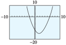

Section 6.1 Factors and \(x\)-Intercepts
¶In Investigation 6.1, perhaps you recognized the graph of the baseball's height as a parabola. In this chapter, we shall see that the graph of any quadratic function is a parabola.
Quadratic Function.
A quadratic function is one that can be written in the form
where \(a\text{,}\) \(b\text{,}\) and \(c\) are constants, and \(a\) is not equal to zero.
Note 6.1.
In the definition above, notice that if \(a\) is zero, there is no \(x\)-squared term, so the function is not quadratic.
In Investigation 6.1, the height of a baseball \(t\) seconds after being hit was given by
We used a graph to find two times when the baseball was \(64\) feet high. Can we solve the same problem algebraically?
We are looking for values of \(t\) that produce \(h = 64\) in the height equation. So, if we substitute \(h = 64\) into the height equation, we would like to solve the quadratic equation
This equation cannot be solved by extraction of roots, because there are two terms containing the variable \(t\text{,}\) and they cannot be combined. To solve this equation, we will appeal to a property of our number system, called the zero-factor principle.
Subsection Zero-Factor Principle
Can you multiply two numbers together and obtain a product of zero? Only if one of the two numbers happens to be zero. This property of numbers is called the zero-factor principle.
Zero-Factor Principle.
The product of two factors equals zero if and only if one or both of the factors equals zero. In symbols,
The principle is true even if the numbers \(a\) and \(b\) are represented by algebraic expressions, such as \(x - 5\) or \(2x + 1\text{.}\) For example, if
then it must be true that either \(x - 5 = 0\) or \(2x + 1 = 0\text{.}\) Thus, we can use the zero-factor principle to solve equations.
Example 6.2.
- Solve the equation \((x - 6)(x + 2) = 0\text{.}\)
- Find the \(x\)-intercepts of the graph of \(f(x) = x^2 - 4x - 12\text{.}\)
-
We apply the zero-factor principle to the product \((x - 6)(x + 2)\text{.}\)
\begin{equation*} \begin{aligned}[t] (x - 6)(x+ 2) \amp = 0 \amp\amp \blert{\text{Set each factor equal to zero.}}\\ x - 6 = 0~~ \amp\text{or} ~~ x+2=0 \amp\amp \blert{\text{Solve each equation.}}\\ ~~~x=6~~ \amp\text{or} ~~ x=-2 \end{aligned} \end{equation*}There are two solutions, \(6\) and \(-2\text{.}\) (You should check that both of these values satisfy the original equation.)
-
To find the \(x\)-intercepts of the graph, we set \(y = 0\) and solve the equation
\begin{equation*} 0 = x^2 - 4x - 12 \end{equation*}But this is the equation we solved in part (a), because \((x - 6)(x + 2) = x^2 - 4x - 12\text{.}\) The solutions of that equation were \(6\) and \(-2\text{,}\) so the \(x\)-intercepts of the graph are \(6\) and \(-2\text{.}\) You can see this by graphing the equation on your calculator, as shown below.

Example 6.2 illustrates an important fact about the \(x\)-intercepts of a graph.
\(x\)-Intercepts of a Graph.
The \(x\)-intercepts of the graph of \(y = f(x)\) are the solutions of the equation \(f(x) = 0\text{.}\)
Notebook 6.3. QuickCheck 1.
Notebook 6.4. Practice 1.
Notebook 6.5. Pause and Reflect.
Subsection Solving Quadratic Equations by Factoring
Before we apply the zero-factor principle to solve a quadratic equation, we must first write the equation so that one side of the equation is zero. Let us introduce some terminology.
Forms for Quadratic Equations.
- A quadratic equation written\begin{equation*} ax^2 + bx + c = 0 \end{equation*}is in standard form.
- A quadratic equation written\begin{equation*} a(x - r_1)(x - r_2) = 0 \end{equation*}is in factored form.
Once we have written the equation in standard form, we factor the left side and set each variable factor equal to zero separately.
Example 6.6.
Solve \(~~3x(x + 1) = 2x + 2\)
First, we write the equation in standard form.
Next, we factor the left side to obtain
We then apply the zero-factor principle by setting each factor equal to zero.
Finally, we solve each equation to find
The solutions are \(\dfrac{2}{3}\) and \(-1\text{.}\)
Caution 6.7.
When we apply the zero-factor principle, one side of the equation must be zero. For example, to solve the equation
it is incorrect to set each factor equal to \(15\text{!}\) (There are many ways that the product of two numbers can equal \(15\text{;}\) it is not necessary that one of the numbers be \(15\text{.}\)) We must first simplify the left side and write the equation in standard form. (The correct solutions are \(7\) and \(-1\text{;}\) make sure you can find these solutions.)
We summarize the factoring method for solving quadratic equations as follows.
To Solve a Quadratic Equation by Factoring.
- Write the equation in standard form.
- Factor the left side of the equation.
- Apply the zero-factor principle: Set each factor equal to zero.
- Solve each equation. There are two solutions (which may be equal).
Notebook 6.8. Practice 2.
We can use factoring to solve the equation from Investigation 6.1.
Example 6.9.
The height, \(h\text{,}\) of a baseball \(t\) seconds after being hit is given by
When will the baseball reach a height of \(64\) feet?
We substitute \(64\) for \(h\) in the formula, and solve for \(t\text{.}\)
There are two solutions to the quadratic equation. At \(t = \dfrac{3}{2}\) seconds, the ball reaches a height of \(64\) feet on the way up, and at \(t = \dfrac{5}{2}\) seconds, the ball is \(64\) feet high on its way down.

In the solution to Example 6.9, the factor \(4\) does not affect the solutions of the equation at all. You can understand why this is true by looking at some graphs. First, check that the two equations
have the same solutions, \(x = 1\) and \(x = 3\text{.}\) Then use your graphing calculator to graph the equation
in the window
Notice that when \(y = 0\text{,}\) \(x = 3\) or \(x = 1\text{.}\) These two points are the \(x\)-intercepts of the graph. In the same window, now graph
This graph has the same \(x\)-values when \(y = 0\text{.}\) The factor of \(4\) stretches the graph vertically but does not change the location of the \(x\)-intercepts.
Notebook 6.10. QuickCheck 2.
The value of the constant factor \(a\) in the factored form of a quadratic function, \(f(x) = a(x - r_1)(x - r_2)\text{,}\) does not affect the location of the \(x\)-intercepts, because it does not affect the solutions of the equation \(a(x - r_1)(x - r_2) = 0\text{.}\)
Notebook 6.11. Practice 3.
Notebook 6.12. Pause and Reflect.
Subsection Applications
Here is another example of how quadratic equations arise in applications.
Example 6.13.

The size of a rectangular computer monitor screen is given by the length of its diagonal, as shown at left. If the length of the screen should be \(3\) inches greater than its width, what are the dimensions of a \(15\)-inch monitor?
We express the two dimensions of the screen in terms of a single variable:
| Width of screen: \(~~ w\) |
| Length of screen: \(~~ w + 3\) |
We can use the Pythagorean theorem to write an equation.
Solve the equation. Begin by simplifying the left side.
Because the width of the screen cannot be a negative number, we discard the solution \(w = -12\text{.}\) Thus, the width is \(w = 9\) inches, and the length is \(w + 3 = 12\) inches.
Notebook 6.14. Practice 4.

Notebook 6.15. QuickCheck 3.
Subsection Solutions of Quadratic Equations
We have seen that the solutions of the quadratic equation
are \(r_1\) and \(r_2\text{.}\) Thus, if we know the two solutions of a quadratic equation, we can work backward and reconstruct the equation, starting from its factored form. We can then write the equation in standard form by multiplying together the factors.
Example 6.16.
Find a quadratic equation whose solutions are \(\dfrac{1}{2}\) and \(-3\text{.}\)
The quadratic equation is
To write the equation in standard form, we multiply the factors together.
We can also find an equation with integer coefficients if we clear the equation of fractions. Multiply both sides by \(2\text{:}\)
You can check that the solutions of this last equation are in fact \(\dfrac{1}{2}\) and \(-3\text{.}\) Multiplying both sides of an equation by a constant factor does not change its solutions.
Notebook 6.17. QuickCheck 4.
Notebook 6.18. Practice 5.
Note 6.19.
A quadratic equation in one variable always has two solutions. However, in some cases, the solutions may be equal. For example, the equation \(x^2 - 2x + 1 = 0\) can be solved by factoring as follows:
Both of these equations have solution \(1\text{.}\) We say that \(1\) is a solution of multiplicity two, meaning that it occurs twice as a solution of the quadratic equation.
Subsection Equations Quadratic in Form
The equation
is not quadratic, but if we make the substitution \(u = x^3\text{,}\) the equation becomes
An equation is called quadratic in form if we can use a substitution to write it as
where \(u\) stands for an algebraic expression. Such equations can be solved by the same techniques we use to solve quadratic equations.
Example 6.20.
Use the substitution \(u = x^3\) to solve the equation
We set \(u = x^3\text{,}\) so that \(u^2 = \left(x^3\right)^2 = x^6\text{.}\) The original equation then becomes a quadratic equation in the variable \(u\text{,}\) which we can solve by factoring.
Finally, we replace \(u\) by \(x^3\) and solve for \(x\text{.}\)
You can verify that the solutions of the original equation are \(-1\) and \(\sqrt[3]{5}\text{.}\)
We say that the equation in Example 6.20, \(x^6 - 4x^3 - 5 = 0\text{,}\) is quadratic in \(x^3\text{.}\) We chose the substitution \(u = x^3\) because \(x^6 = u^2\text{.}\)
Notebook 6.21. Practice 6.
Usually, you can choose the simpler variable term in the equation for the \(u\)-substitution. For example, in Notebook 6.21 we chose \(u = x^2\) because \(u^2 = \left(x^2\right)^2 = x^4\text{,}\) which is the first term of the equation. Once you have chosen the \(u\)-substitution, you should check that the other variable term is then a multiple of \(u^2\text{;}\) otherwise, the equation is not quadratic in form.
Example 6.22.
Solve the equation \(e^{2x} - 7e^x + 12 = 0\text{.}\)
We use the substitution \(u = e^x\text{,}\) because \(u^2 = \left(e^x\right)^2 = e^{2x}\text{.}\) The original equation then becomes
Finally, we replace \(u\) by \(e^x\) and solve for \(x\text{.}\)
You should verify that the solutions of the original equation are \(\ln 3\) and \(\ln 4\text{.}\)
Notebook 6.23. Practice 7.
Notebook 6.24. Pause and Reflect.
Subsection Section Summary
¶Subsubsection Vocabulary
Look up the definitions of new terms in the Glossary.
Quadratic function
Zero-factor principle
Standard form
Factored form
Multiplicity
Monotonic
Subsubsection CONCEPTS
Quadratic Function.
A quadratic function is one that can be written in the form
\begin{equation*} f(x) = ax^2 + bx + c \end{equation*}where \(a\text{,}\) \(b\text{,}\) and \(c\) are constants, and \(a\) is not equal to zero.
Zero-Factor Principle.
The product of two factors equals zero if and only if one or both of the factors equals zero. In symbols,
\begin{equation*} ab=0 ~~\text{ if and only if }~~ a=0 ~~\text{ or }~~ b=0 \end{equation*}\(x\)-Intercepts of a Graph.
The \(x\)-intercepts of the graph of \(y = f(x)\) are the solutions of the equation \(f(x) = 0\text{.}\)
-
A quadratic equation written as \(ax^2 + bx + c = 0\) is in standard form.
A quadratic equation written as \(a (x - r_1) (x - r_2) = 0\) is in factored form.
To Solve a Quadratic Equation by Factoring.
- Write the equation in standard form.
- Factor the left side of the equation.
- Apply the zero-factor principle: Set each factor equal to zero.
- Solve each equation. There are two solutions (which may be equal).
Every quadratic equation has two solutions, which may be the same.
The value of the constant \(a\) in the factored form of a quadratic equation does not affect the solutions.
Each solution of a quadratic equation corresponds to a factor in the factored form.
An equation is called quadratic in form if we can use a substitution to write it as \(au^2 + bu + c = 0\text{,}\) where \(u\) stands for an algebraic expression.
Subsubsection STUDY QUESTIONS
Find a pair of numbers whose product is \(6\text{.}\) Now find a different pair of numbers whose product is \(6\text{.}\) Can you find more such pairs?
Find a pair of numbers whose product is \(0\text{.}\) What is true about any such pair?
Before you begin factoring to solve a quadratic equation, what should you do?
How can you find the \(x\)-intercepts of the graph of \(y = f (x)\) without looking at the graph?
How many solutions does a quadratic equation have?
Write a linear equation whose only solution is \(x = 3\text{.}\)
Write a quadratic equation whose only solution is \(x = 3\text{.}\)
If you know the solutions of \(ax^2 + bx + c = 0\text{,}\) how can you find the solutions of \(5(ax^2 + bx + c) = 0\text{?}\)
Is the equation \(x^9 - 6x^3 + 8 = 0\) quadratic in form? Why or why not?
Delbert says that he can solve the equation \(x(x + 5) = 2(x + 5)\) by canceling the factor \((x + 5)\) to get \(x = 2\text{.}\) Comment on his method
Subsubsection SKILLS
Practice each skill in the Homework problems listed.
Use the zero-factor principle and find x-intercepts: #3–10
Solve quadratic equations by factoring: #11–24
Use the \(x\)-intercepts of the graph to factor a quadratic equation: #25–28, 37–40
Write a quadratic equation with given solutions: #29–36
Solve applied problems involving quadratic equations: #41–50
Solve equations that are quadratic in form: #51–62
Exercises Homework 6.1
¶1.
Delbert stands at the top of a \(300\)-foot cliff and throws his algebra book directly upward with a velocity of \(20\) feet per second. The height of his book above the ground \(t\) seconds later is given by the equation
where \(h\) is in feet.
Use your calculator to make a table of values for the height equation, with increments of \(0.5\) second.
Graph the height equation on your calculator. Use your table of values to help you choose appropriate window settings.
What is the highest altitude Delbert’s book reaches? When does it reach that height? Use the
TRACEfeature to find approximate answers first. Then use the Table feature to improve your estimate.When does Delbert's book pass him on its way down? (Delbert is standing at a height of \(300\) feet.) Use the intersect command.
How long will it take Delbert's book to hit the ground at the bottom of the cliff?
2.
James Bond stands on top of a \(240\)-foot building and throws a film canister upward to a fellow agent in a helicopter \(16\) feet above the building. The height of the film above the ground \(t\) seconds later is given by the formula
where \(h\) is in feet.
Use your calculator to make a table of values for the height formula, with increments of \(0.5\) second.
Graph the height formula on your calculator. Use your table of values to help you choose appropriate window settings.
How long will it take the film canister to reach the agent in the helicopter? (What is the agent's altitude?) Use the
TRACEfeature to find approximate answers first. Then use the Table feature to improve your estimate.If the agent misses the canister, when will it pass James Bond on the way down? Use the intersect command.
How long will it take it to hit the ground?
In Problems 3–10, use a graph to solve the equation \(y = 0\text{.}\) (Use \(\text{Xmin} =-9.4\text{,}\) \(\text{Xmax} = 9.4\text{.}\)) Check your answers with the zero-factor principle.
3.
\(y = (2x + 5)(x - 2)\)
4.
\(y = (x + 1)(4x - 1)\)
5.
\(y =x(3x + 10)\)
6.
\(y =x(3x - 7)\)
7.
\(y =(4x + 3)(x + 8)\)
8.
\(y =(x - 2)(x - 9)\)
9.
\(y =(x - 4)^2\)
10.
\(y =(x + 6)^2\)
For Problems 11-24, solve by factoring. (See Algebra Skills Refresher Appendix A.8 to review factoring.)
11.
\(2a^2 + 5a - 3 = 0\)
12.
\(3b^2 - 4b - 4 = 0 \)
13.
\(2x^2 = 6x \)
14.
\(5z^2 = 5z \)
15.
\(3y^2 - 6y = -3 \)
16.
\(4y^2 + 4y = 8 \)
17.
\(x(2x - 3) = -1 \)
18.
\(2x(x - 2) = x + 3 \)
19.
\(t (t - 3) = 2(t - 3) \)
20.
\(5(t + 2) = t (t + 2)\)
21.
\(z(3z + 2) = (z + 2)^2 \)
22.
\((z - 1)^2 = 2z^2 + 3z - 5 \)
23.
\((v + 2)(v - 5) = 8 \)
24.
\((w + 1)(2w - 3) = 3 \)
In Problems 25–28, graph each set of functions in the standard window.What do you notice about the \(x\)-intercepts? Generalize your observation, and test your idea with examples.
25.
\(f(x) = x^2 - x - 20\)
\(g(x) = 2(x^2 - x - 20)\)
\(h(x) = 0.5(x^2 - x - 20)\)
26.
\(f(x) = x^2 + 2x - 15 \)
\(g(x)= 3(x^2 + 2x - 15)\)
\(h(x) = 0.2(x^2 + 2x - 15)\)
27.
\(f(x) = x^2 + 6x - 16 \)
\(g(x) = -2(x^2 + 6x - 16)\)
\(h(x) = -0.1(x^2 + 6x - 16)\)
28.
\(f(x) = x^2 - 16 \)
\(g(x) = -1.5(x^2 - 16)\)
\(h(x) = -0.4(x^2 - 16)\)
In Problems 29–36, write a quadratic equation whose solutions are given. The equation should be in standard form with integer coefficients.
29.
\(-2\) and \(1\)
30.
\(-4\) and \(3\)
31.
\(0\) and \(-5\)
32.
\(0\) and \(5\)
33.
\(-3\) and \(\dfrac{1}{2} \)
34.
\(\dfrac{-2}{3} \) and \(4\)
35.
\(\dfrac{-1}{4} \) and \(\dfrac{3}{2} \)
36.
\(\dfrac{-1}{3} \) and \(\dfrac{-1}{2} \)
For problems 37-40, graph the function in the ZInteger window, and locate the \(x\)-intercepts of the graph. Use the \(x\)-intercepts to write the quadratic expression in factored form.
37.
\(f(x) = 0.1(x^2 - 3x - 270)\)
38.
\(h(x) = 0.1(x^2 + 9x - 360)\)
39.
\(g(x) = -0.08(x^2 + 14x - 576)\)
40.
\(F(x) = -0.06(x^2 - 22x - 504)\)
Use the Pythagorean theorem to solve Problems 41 and 42. (See Algebra Skills Refresher Appendix A.11 to review the Pythagorean theorem.)
41.
One end of a ladder is \(10\) feet from the base of a wall, and the other end reaches a window in the wall. The ladder is \(2\) feet longer than the height of the window.
Write a quadratic equation about the height of the window.
Solve your equation to find the height of the window.

42.
The diagonal of a rectangle is \(20\) inches. One side of the rectangle is \(4\) inches shorter than the other side.
Write a quadratic equation about the length of the rectangle.
Solve your equation to find the dimensions of the rectangle.
Use the following formula to answer Problems 43 and 44. If an object is thrown into the air from a height \(s_0\) above the ground with an initial velocity \(v_0\text{,}\) its height \(t\) seconds later is given by the formula
where \(g\) is a constant that measures the force of gravity.
43.
A tennis ball is thrown into the air with an initial velocity of \(16\) feet per second from a height of \(8\) feet. The value of \(g\) is \(32\text{.}\)
Write a quadratic equation that gives the height of the tennis ball at time \(t\text{.}\)
Find the height of the tennis ball at \(t = \dfrac{1}{2}\) second and at \(t = 1\) second.
Write and solve an equation to answer the question: At what time is the tennis ball \(11\) feet high?
Use the Table feature on your calculator to verify your answers to parts (b) and (c). (What value of \(\Delta \text{Tbl}\) is useful for this problem?)
Graph your equation from part (a) on your calculator. Use your table to help you choose an appropriate window.
If nobody hits the tennis ball, approximately how long will it be in the air?
44.
A mountain climber stands on a ledge \(80\) feet above the ground and tosses a rope down to a companion clinging to the rock face below the ledge. The initial velocity of the rope is \(-8\) feet per second, and the value of \(g\) is \(32\text{.}\)
Write a quadratic equation that gives the height of the rope at time \(t\text{.}\)
What is the height of the rope after \(\dfrac{1}{2} \) second? After \(1\) second?
Write and solve an equation to answer the question: How long does it take the rope to reach the second climber, who is \(17\) feet above the ground?
Use the Table feature on your calculator to verify your answers to parts (b) and (c). (What value of \(\Delta \text{Tbl}\) is useful for this problem?)
Graph your equation from part (a) on your calculator. Use your table to help you choose an appropriate window.
If the second climber misses the rope, approximately how long will the rope take to reach the ground?
For Problems 45 and 46, you may want to review Investigation 2.2, Perimeter and Area, in Chapter 2.
45.
A rancher has \(360\) yards of fence to enclose a rectangular pasture. If the pasture should be \(8000\) square yards in area, what should its dimensions be? We will use 3 methods to solve this problem: a table of values, a graph, and an algebraic equation.
-
Make a table by hand that shows the areas of pastures of various widths, as shown here.
Width Length Area \(10\) \(170\) \(1700\) \(\vdots\) \(\vdots\) \(\vdots\) (To find the length of each pasture, ask yourself, What is the sum of the length plus the width if there are \(360\) yards of fence?) Continue the table until you find the pasture whose area is \(8000\) square yards.
Write an expression for the length of the pasture if its width is \(x\text{.}\) Next, write an expression for the area, \(A\text{,}\) of the pasture if its width is \(x\text{.}\) Graph the equation for \(A\) on your calculator, and use the graph to find the pasture of area \(8000\) square yards.
Write an equation for the area, \(A\text{,}\) of the pasture in terms of its width \(x\text{.}\) Solve your equation algebraically for \(A = 8000\text{.}\) Explain why there are two solutions.
46.
If the rancher in Problem 45 uses a riverbank to border one side of the pasture as shown in the figure, he can enclose \(16,000\) square yards with \(360\) yards of fence. What will the dimensions of the pasture be then? We will use three methods to solve this problem: a table of values, a graph, and an algebraic equation.

-
Make a table by hand that shows the areas of pastures of various widths, as shown here.
Width Length Area \(10\) \(340\) \(3400\) \(20\) \(320\) \(6400\) \(\vdots\) \(\vdots\) \(\vdots\) (Be careful computing the length of the pasture: Remember that one side of the pasture does not need any fence!) Continue the table until you find the pasture whose area is \(16,000\) square yards.
Write an expression for the length of the pasture if its width is \(x\text{.}\) Next, write an expression for the area, \(A\text{,}\) of the pasture if its width is \(x\text{.}\) Graph the equation for \(A\text{,}\) and use the graph to find the pasture of area \(16,000\) square yards.
Write an equation for the area, \(A\text{,}\) of the pasture in terms of its width \(x\text{.}\) Solve your equation algebraically for \(A = 16,000\text{.}\)
For Problems 47 and 48, you will need the formula for the volume of a box.
47.
A box is made from a square piece of cardboard by cutting \(2\)-inch squares from each corner and turning up the edges.

If the piece of cardboard is \(x\) inches square, write expressions for the length, width, and height of the box. Then write an expression for the volume, \(V\text{,}\) of the box in terms of \(x\text{.}\)
Use your calculator to make a table of values showing the volumes of boxes made from cardboard squares of side \(4\) inches, \(5\) inches, and so on.
Graph your expression for the volume on your calculator. What happens to \(V\) as \(x\) increases?
Use your table or your graph to find what size cardboard you need to make a box with volume \(50\) cubic inches.
Write and solve a quadratic equation to answer part (d).
48.
A length of rain gutter is made from a piece of aluminum \(6\) feet long and \(1\) foot wide.
-
If a strip of width \(x\) is turned up along each long edge, write expressions for the length, width, and height of the gutter. Then write an expression for the volume, \(V\text{,}\) of the gutter in terms of \(x\text{.}\)

Use your calculator to make a table of values showing the volumes of various rain gutters formed by turning up edges of \(0.1\) foot, \(0.2\) foot, and so on.
Graph your expression for the volume. What happens to \(V\) as \(x\) increases?
Use your table or your graph to discover how much metal should be turned up along each long edge so that the gutter has a capacity of \(\dfrac{3}{4} \) cubic foot of rainwater.
Write and solve a quadratic equation to answer part (d).
Problems 49 and 50 deal with wildlife management. The annual increase, \(I\text{,}\) in a population often depends on the size \(x\) of the population, according to the formula
where \(k\) and \(C\) are constants related to the fertility of the population and the availability of food.
49.
The annual increase, \(f (x)\text{,}\) in the deer population in a national park is given by
where \(x\) is the size of the population that year.
Make a table of values for \(f (x)\) for \(0 \le x \le 7000\text{.}\) Use increments of \(500\) in \(x\text{.}\)
How much will a population of \(2000\) deer increase? A population of \(5000\) deer? A population of \(7000\) deer?
Use your calculator to graph the annual increase, \(f (x)\text{,}\) versus the size of the population, \(x\text{,}\) for \(0 \le x \le 7000\text{.}\)
What do the \(x\)-intercepts tell us about the deer population?
Estimate the population size that results in the largest annual increase. What is that increase?
50.
Commercial fishermen rely on a steady supply of fish in their area. To avoid overfishing, they adjust their harvest to the size of the population. The function
gives the annual rate of growth, in tons per year, of a fish population of biomass \(x\) tons.
Make a table of values for \(g(x)\) for \(0 \le x\le 5000\text{.}\) Use increments of \(500\) in \(x\text{.}\)
How much will a population of \(1000\) tons increase? A population of \(3000\) tons? A population of \(5000\) tons?
Use your calculator to graph the annual increase, \(g(x)\text{,}\) versus the size of the population, \(x\text{,}\) for \(0\le x\le 5000\text{.}\)
What do the \(x\)-intercepts tell us about the fish population?
Estimate the population size that results in the largest annual increase. What is that increase?
For Problems 51-62, use a substitution to solve the equation.
51.
\(a^4 + a^2 - 2 = 0\)
52.
\(t^6 - t^3 - 6 = 0\)
53.
\(4b^6 - 3 = b^3\)
54.
\(3x^4 + 1 = 4x^2\)
55.
\(c^{2/3} + 2c^{1/3} - 3 = 0\)
56.
\(y^{1/2} - 3y^{1/4} - 4 = 0\)
57.
\(10^{2w}-5\cdot 10^w + 6 = 0\)
58.
\(e^{2x} - 5e^x + 4 = 0\)
59.
\(5^{2t} - 30\cdot 5^t + 125 = 0\)
60.
\(e^{4r} - 3e^{2r} + 2 = 0\)
61.
\(\dfrac{1}{m^2}+ \dfrac{5}{m} - 6 = 0\)
62.
\(\dfrac{1}{s^2}+ \dfrac{4}{s} - 5 = 0\)
63.
The sail in the figure is a right triangle of base and height \(x\text{.}\) It has a colored stripe along the hypotenuse and a white triangle of base and height \(y\) in the lower corner.

Write an expression for the area of the colored stripe.
Express the area of the stripe in factored form.
If the sail is \(7\frac{1}{2} \) feet high and the white strip is \(4\frac{1}{2} \) feet high, use your answer to (b) to calculate mentally the area of the stripe.
64.
An hors d'oeuvres tray has radius \(x\text{,}\) and the dip container has radius \(y\text{,}\) as shown in the figure.

Write an expression for the area for the chips (shaded region).
Express the area in factored form.
If the tray has radius \(8\frac{1}{2} \) inches and the space for the dip has radius \(2\frac{1}{2} \) inches, use your answer to part (b) to calculate mentally the area for chips. (Express your answer as a multiple of \(\pi\text{.}\))